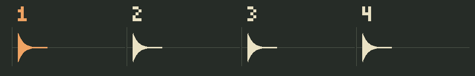
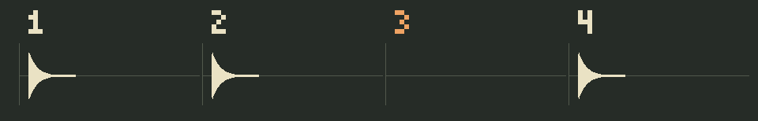
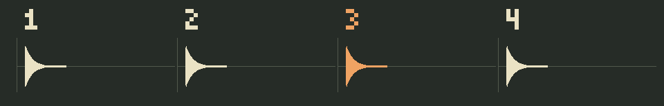

Field Notes · Listening studies
The missing click
Tap four beats on the table. When one click disappears, can you keep your finger landing in the same place?
Set the pulse
Find beat one
The higher click marks the beginning of each group of four. Tap once for every click. At this pace, two taps take one second.

Leave a space
Keep tapping through three
The third click drops out. Your finger still has a job on that beat. Listen for the fourth click to land with your next tap.

Check your timing
Catch the returning click
Start with the gap again and count two bars. On the third bar, the missing click comes back. If it meets your finger, you carried the beat through the silence. If it lands between taps, replay the gap and count all four beats aloud.

Source transcript
Plain textChoose a time to listen. Copy its link to share that moment.
- 0:00Tap four beats on the table. The high click marks one. Let your hand follow the next four bars.
- 0:08[Four bars of four evenly spaced clicks. The first click in each bar is higher.]
- 0:16Keep tapping. I’m leaving a space on beat three. The fourth click will tell you whether you kept time.
- 0:24[Four bars. Beat three is silent in each bar.]
- 0:32One more try. The gap lasts two bars. Keep tapping until the missing click comes back under your finger.
- 0:40[Two bars with a gap. A third bar begins with two clicks.]
- 0:45[The third click returns. The pattern continues to the end of the fourth bar.]